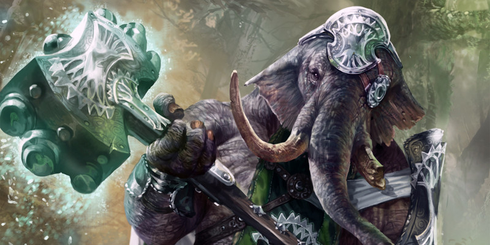

Races de Ravnica
Ce document présente plusieurs races du monde de Ravnica : loxodon, hybride simic, vedalken et viashino.
Loxodon
Pareil à un éléphant humanoïde, un loxodon est un havre de paix au milieu des rues agitées de Ravnica. Il se meut lentement, en fredonnant ou en chantant, de ce ton étrangement sonore et mélodieux propre à sa race. Quand il ne s'assoit tout simplement pas entre deux courtes marches, en retrait de la cohue et de la frénésie ambiante, dans une attitude de calme absolu. Poussé à l'action, il devient une terreur sacrée, beuglant de rage, barrissant de la trompe et battant des oreilles. Sa robustesse et sa sagesse, ainsi que sa loyauté et sa conviction inébranlables, sont des atouts considérables pour sa guilde.
Géants maladroits
Les loxodons dominent la plupart des autres humanoïdes, toisant le monde de plus de deux mètres vingt de haut. Ils ont la tête (trompe, défenses, oreilles et visage) d'un éléphant, et le reste d'un humanoïde immense, couvert par une peau épaisse et coriace. Leurs mains ont quatre doigts épais, et leurs pieds ont le plat ovale des puissants pachydermes desquels ils semblent apparentés. Comme celle d'un éléphant, la trompe d'un loxodon est un appendice utile qui complète à merveille ses mains. En plus de lui fournir un sens aigu de l'odorat, elle peut être utilisée pour soulever et porter des objets, y compris d'un poids important, et les deux saillies en forme de doigt à son extrémité sont capables de manipulations délicates. La trompe sert aussi pour transporter de la nourriture et des liquides à la bouche et peut même agir comme un tuba.
Tailleurs de pierre surdoués
Les loxodons sont des artisans infatigables, dotés d'une incomparable intuition de leur métier. Tandis qu'il fait naître dans la patience des leaders spirituels, leur don pour la pierre est si naturel qu'ils sont souvent en défaut quand il s'agit de transmettre leurs connaissances à autrui. Parmi les Selesnya, c'est à eux que revient principalement d'ériger les structures du magnifique arboretum-cathédrale de la guilde.
Inlassablement loyaux
Les loxodons croient aux valeurs de vie et de communauté, et peuvent donc se trouver le plus souvent au sein du conclave de Selesnya. Certains parmi ceux qui tiennent à souligner encore d'avantage les bienfaits de l'ordre rejoignent le syndicat Orzhov ou le Sénat Azorius. Les loxodons croient que les membres d'un groupe ont la responsabilité de se veiller entre eux. Une fois qu'ils ont rejoint une guilde ou se sont liés avec d'autres personnes de quelque manière que ce soit, ils se consacrent à maintenir ce lien. Ils organisent leurs efforts en fonction de ceux de leur groupe, et sont souvent disposés à se sacrifier pour son bien, même s'ils sont moins passionnés par les buts dudit groupe que par l'intégrité de chacun de ses membres. Ils attendent la même loyauté et le même engagement d'eux, et grave peut être leur déception quand cette attente est trahie. La principale différence entre des loxodons qui ont rejoint des guildes différentes, est l'idée de la taille de la communauté à laquelle ils appartiennent, et qui détermine tous leurs efforts. Pour les loxodons dans le conclave Selesnya, la communauté est le monde et tous les êtres vivants qui y sont, tous précieux, tous destiné à vivre en harmonie, tous interdépendants. Pour les loxodons d'Azorius, le terme de communauté signifie surtout la société des races évoluées qui ont besoin de la loi et de l'ordre pour fonctionner ensemble. Pour ceux de l'Orzhov, la communauté signifie le syndicat, l'intérêt de chacun de ses membres primant sur ceux de tout autre individu et, par extension, ceux du syndicat lui-même sur ceux de toute autre guilde.
Noms de loxodons
La prononciation d'un nom loxodon inclut une grande variété de nuances sonores, produites dans des chambres nasales résonnantes, qui indiquent le statut, le lien à la famille et le rôle dans la communauté. Comme la plupart des membres des autres races ne peuvent ni entendre, ni distinguer ces nuances, et encore moins les articuler, un loxodon traduit souvent son propre nom en titres, tels que Hiérarque, Révéré, Grand-mère, Guérisseuse ou Saint.
Noms masculins : Bayul, Berov, Brooj, Chedumov, Dobrun, Droozh, Golomov, Heruj, Ilromov, Kel, Nikoom, Ondros, Radomov, Svetel, Tamuj, Throom, Vasool
Noms féminins : Ajj, Boja, Dancu, Dooja, Elyuja, Fanoor, Irij, Jasoo, Katrun, Lyooda, Mayja, Radu, Shuja, Soofya, Totoor, Verij, Vesmova, Yoolna, Zarij, Zoorja
Traits
Votre personnage loxodon possède les traits raciaux suivants :
Ajustement de caractéristique. Votre Constitution augmente de 2 et votre Sagesse de 1.
Âge. Les loxodons mûrissent physiquement au même rythme que les humains, mais ils vivent environ 450 ans. Ils tiennent en haute valeur le poids des ans et la sagesse qui lui est inhérente, et sont considérés comme jeunes jusqu'à ce qu'ils atteignent l'âge de 60 ans au moins.
Alignement. La plupart des loxodons sont loyaux, croyant en la valeur d'une vie paisible et ordonnée. Ils ont aussi tendance à être bons.
Taille. Les loxodons mesurent entre 2,10 et 2,40 mètres de haut. Leurs corps massifs pèsent entre 140 et 180 kg. Votre taille est Moyenne (M).
Vitesse. Votre vitesse de base est de 9 mètres.
CALCUL DE LA CA
Lorsque le jeu vous offre plus d'une façon de calculer votre Classe d'Armure, vous ne pouvez en utiliser qu'une et choisissez celle à utiliser. Par exemple, si vous avez le trait Armure naturelle du loxodon et la capacité Défense sans armure du moine, vous ne pouvez pas les empiler. Au lieu de cela, vous choisissez le trait ou la capacité qui détermine votre CA.
Armure naturelle. Vous avez une peau épaisse et coriace. Lorsque vous ne portez pas d'armure, votre CA est de 13 + votre modificateur de Dextérité. Vous pouvez utiliser votre armure naturelle pour déterminer votre CA si l'armure que vous portez vous laisse avec une CA inférieure. Les avantages du bouclier s'appliquent normalement.
Connaissance de la pierre. Chaque fois que vous effectuez un jet d'Intelligence (Histoire) en relation avec l'origine d'un travail lié à la pierre, considérez que vous maîtrisez la compétence Histoire et ajoutez le double de votre bonus de maîtrise au jet, au lieu du bonus de maîtrise normal.
Courage loxodon. Vous avez un avantage aux jets de sauvegarde effectués pour ne pas être effrayé.
Maçon compétent. Vous maîtrisez les outils de maçon.
Odorat précis. Grâce à la sensibilité de votre trompe, vous avez un avantage aux jets de Sagesse (Perception) et d'Intelligence (Investigation) basés sur l'odeur.
Puissamment bâtit. Vous comptez comme une taille plus grande pour déterminer votre capacité de charge et le poids que vous pouvez pousser, traîner ou soulever.
Langues. Vous parlez, lisez et écrivez le commun.
Hybride Simic
Ce cartel utilise la magie pour fusionner différentes formes de vie ensemble. Ces dernières années, ils ont étendu cette recherche aux sujets humanoïdes, transférant par magie les traits de divers animaux aux humains, elfes et vedalkens. Aujourd'hui, l'objectif du projet Gardiens est de construire une armée simic de soldats supérieurs, parfaitement adaptés à toute variété de situation de combat. Ces spécimens hyper-évolués s'appellent des hybrides simics, bien qu'on les nomme parfois du nom du projet, des Gardiens.
Adaptation approfondie
Les hybrides simics partagent de nombreuses caractéristiques avec leur race d'origine, y compris leur forme physique de base. Les hybrides humains sont les plus polyvalents, remplissant une grande variété de rôles simultanément. Les agiles hybrides elfes conservent les capacités perceptives de leur race, ce qui fait d'eux les espions idéals, quand ils ne servent pas d'éclaireurs ou ne sont pas employés comme infiltrés. Et les hybrides vedalkens jouissent du même intellect calculateur que ceux dont ils sont issus, ce qui fait d'eux des tacticiens supérieurs, des stratèges ou des lanceurs de sorts hors-pairs. Les améliorations biologiques des hybrides peuvent changer leur apparence radicalement : tous les hybrides possèdent certaines caractéristiques physiques issues des animaux, principalement des créatures aquatiques et reptiliennes. Ceux-ci incluent des pinces de crabe, des tentacules de calmar, des ailes qui ressemblent à des membranes ou à des nageoires, une peau translucide ou capable de mimétisme, des gueules de requin remplies de dents acérées.
Les hybrides sont le produit de la magie Simic. Il n'est pas impossible pour un hybride de quitter l'organisation et de rejoindre une autre guilde, mais le cartel considérerait alors l'hybride comme un déserteur, tandis que la nouvelle guilde pourrait ne jamais accueillir pleinement un hybride qui risquerait toujours d'être un espion simic.
Noms d'hybrides
Un hybride porte généralement le nom donné par ses parents humains, elfes ou vedalkens. Mais quelques-uns prennent un nouveau nom après leur transformation, un nom choisi par eux, ou par ceux qui les ont transformés.
Traits
Votre personnage hybride a les traits raciaux suivants.
Ajustement de caractéristiques. Votre Constitution augmente de 2, et une autre caractéristique de votre choix augmente de 1.
Âge. Les hybrides commencent leur vie en tant qu'adultes humains, elfes ou vedalkens (choisissez dès à présent votre origine raciale). Ils présentent des signes de vieillissement légèrement accéléré, donc leur durée de vie maximale est probablement quelque peu réduite, mais le projet Gardiens est trop récent pour que l'on ait des informations suffisantes sur ce phénomène étrange.
Alignement. La plupart des hybrides partagent la perspective neutre du cartel de simic. Ils sont plus intéressés par la recherche scientifique et la position de leur guilde que par les questions morales ou éthiques. Cependant, ceux qui quittent l'organisation le font souvent parce que leurs idées philosophiques et leurs positions quant au bien et au mal sont plus en adéquation avec celles d'une autre guilde.
Taille. Votre taille est Moyenne (M), dans la normale de votre race humanoïde de base.
Vitesse. Votre vitesse de base est de 9 mètres.
Vision dans le noir. Vous pouvez voir à 18 mètres dans une lumière faible comme vous verriez avec une lumière vive, et dans le noir comme vous verriez avec une lumière faible. Dans le noir, vous ne discernez pas les couleurs, uniquement des nuances de gris.
Améliorations animales. Votre corps a été modifié pour incorporer certaines caractéristiques animales. Choisissez une amélioration animale maintenant.
- Adaptation aquatique. Vous pouvez respirer de l'air ou de l'eau, et vous avez une vitesse de nage égale à votre vitesse de marche.
- Glissade de la raie manta. Vos ailes de raie peuvent ralentir votre chute vous permettre de glisser. Quand vous tombez et n'êtes pas neutralisé, vous pouvez soustraire jusqu'à 30 mètres de la hauteur de chute lors du calcul des dégâts subis, et vous pouvez vous déplacer jusqu'à 2 mètres horizontalement pour chaque mètre que vous descendez.
- Grimpeur Agile. Vous avez une vitesse d'escalade égale à votre vitesse de marche.
Au niveau 5, choisissez l'une des options suivantes ou choisissez une des options que vous n'avez pas prises au niveau 1 :
- Appendices de lutte. Un appendice spécial pousse à côté de chacun de vos bras, vous donnant l'apparence d'un être pourvu de quatre membres supérieurs. Ces appendices sont capables d'infliger des blessures conséquentes et de saisir vos adversaires. Choisissez s'il s'agit d'une paire de longues griffes chitineuses, ou d'une paire de tentacules. Chacun de ces appendices est une arme naturelle, que vous pouvez utiliser pour faire des attaques à mains nues. Si vous touchez, la cible subit des dégâts contondants ou tranchants (selon votre choix) égaux à 1d6 + votre modificateur de Force, au lieu des dégâts normaux d'une attaque réussie à mains nues. Immédiatement après avoir frappé, vous pouvez essayer d'empoigner la cible sur une action bonus. Les appendices sont incapables d'une manipulation de précision, et ne peuvent pas utiliser des armes, des objets magiques, ou autres équipements spécialisés.
- Carapace. Votre peau à certains endroits est couverte par une épaisse coquille minérale, à l'instar d'un crabe ou d'un coquillage. Vous gagnez un bonus de +1 à la CA lorsque vous ne portez pas d'armure lourde. Cette amélioration n'est pas cumulable à Peau translucide.
- Crachat acide. Sur une action, vous pouvez pulvériser un jet d'acide de vos glandes buccales, en ciblant une créature ou un objet que vous pouvez voir et situé à 9 mètres ou moins de vous. La cible doit réussir un jet de sauvegarde de Dextérité contre un DD égal à 8 + votre modificateur de Constitution + votre bonus de maîtrise, ou subir 2d10 dégâts d'acide. Les dégâts passent à 3d10 quand vous atteignez le niveau 11, et à 4d10 au niveau 17 (4d10).
Langues. Vous parlez, lisez et écrivez le commun et l'elfique.
Vedalken
Rien n'est parfait : non seulement les vedalkens adhèrent à cette idée, mais ils s'en réjouissent. Car chaque erreur dans l'élaboration d'un outil, d'un plan ou d'une théorie, que l'expérience pratique va révéler, est la chance d'un affinage possible, et le progrès est une marche sans fin vers un état de perfection qui pourrait ne jamais être atteint. Cette philosophie conduit les vedalkens à poursuivre leur travail avec un enthousiasme ravi, jamais découragés par les revers de la fortune, et sans cesse excités par chaque nouvelle opportunité d'amélioration.
Rationalité tranquille
Les vedalkens sont grands et minces, mesurant une tête de plus que les humains mais pesant à peu près autant. Leur peau imberbe couvre une gamme de nuances de bleu et de violet. Leurs yeux ont des tons bleu ou violet foncés. Ils n'ont pas d'oreille externe et leur nez est large et plat. En règle générale, les vedalkens ont une conversation grégaire [qui pousse à former des groupes et à avoir les mêmes comportements]. Cependant, ils sont réservés sur leur vie personnelle et ont tendance à s'engager davantage pour des idées que pour des personnes. Ils forment des amitiés étroites basées sur des intérêts mutuels ou des désaccords convaincants, et leurs interactions se concentrent sur leurs réflexions concernant ces problèmes plutôt que sur leurs sentiments à leur égard. Pour les membres des autres races, les vedalkens semblent souvent froids, voire sans émotion. Mais cela n'est pas juste car ils ressentent les émotions de la même manière que les autres races ; ils ne sont simplement pas habiles pour les afficher. Une rationalité tranquille guide leurs actions ; ils élaborent et suivent des plans minutieux et sont suffisamment patients pour ne rien faire du tout lorsque le résultat idéal repose sur l'inaction.
Raisonner vers la perfection
Leur intelligence curieuse et leur esprit rationnel inclinent fortement les vedalkens vers l'adhésion au Sénat Azorius, à l'organisation Simic et (moins souvent) à la ligue Izzet. Quelle que soit la guilde à laquelle ils s'affilient, ils mettent toute leur intelligence au service de l'élaboration et de l'amélioration des lois, des procédures, et des sciences magiques de celle-ci. Un vedalken pense que le chemin vers l'inaccessible but de la perfection est pavé des pierres de l'éducation, de la délibération minutieuse et de l'expérimentation contrôlée. Du reste, leur désir de contrôle étroit pour éviter les erreurs désastreuses les rend généralement moins enclin à la ligue Izzet, où les erreurs explosives sont célébrées. Certains vedalkens dirigent leur énergie vers le perfectionnement d'eux-mêmes, plutôt que de la résolution d'un problème en particulier, de l'amélioration d'une théorie ou du perfectionnement d'une société à travers la fabrication soignée et le perfectionnement des lois.
Noms de vedalkens
Les vedalkens reçoivent leur nom à la naissance, mais ils se choisissent généralement un nouveau nom à la fin de leur adolescence, pour accompagner le processus du passage à l'âge adulte. Ils utilisent rarement un nom de famille.
Noms masculins : Aglar, Bellin, Dallid, Firellan, Kavin, Koplony, Lomar, Mathvan, Modar, Nebun, Nhillosh, Nitt, Otrovac, Ovlan, Pelener, Rill, Trivaz, Uldin, Yolov, Zataz
Noms féminins : Azi, Barvisa, Brazia, Direll, Fainn, Griya, Hallia, Katrille, Kovel, Lilla, Mirela, Morai, Nedress, Ossya, Pierenn, Roya, Sestri, Triel, Uzana, Yaraghiya, Zlovol
Traits
Votre personnage vedalken possède les traits suivants.
Ajustement de caractéristiques. Votre Intelligence augmente de 2 et votre Sagesse augmente de 1.
Âge. Les vedalkens grandissent et vieillissent un peu comme des humains, mais chaque étape de leur vie est beaucoup plus longue. Pour la plupart, les activités adultes sont censées avoir démarrées vers 40 ans, et leur espérance de vie est généralement comprise entre 350 et 500 ans.
Alignement. Les vedalkens sont le plus souvent loyaux, et rarement mauvais.
Taille. Les vedalkens sont plus grands que les humains mais aussi plus minces. Ils mesurent en moyenne entre 1,80 et 2 mètres, et pèsent généralement moins de 90 kg. Votre taille est Moyenne (M).
Vitesse. Votre vitesse de base est de 9 mètres.
Calme vedalken. Vous avez un avantage à tous vos jets de sauvegarde d'Intelligence, de Sagesse et de Charisme.
Précis sans effort. Vous maîtrisez une des compétences suivantes (choisissez) : Arcanes, Escamotage, Histoire, Investigation, Médecine ou Représentation. Vous maîtrisez également un outil de votre choix. De plus, chaque fois que vous faites un jet de caractéristique avec la compétence ou l'outil choisi, lancez un d4 et ajoutez le résultat au total.
Langues. Vous parlez, lisez et écrivez le commun.
Viashino
De nombreux reptiles tirent leur chaleur corporelle et leur énergie du soleil, mais les viashinos humanoïdes sont alimentés par un feu intérieur de zèle. Livrés à leurs émotions, les viashinos peuvent être colériques, mais ils sont tout aussi prompts à leurs éclats de rire sifflant. Et ils tissent facilement des liens serrés d'amitié. Ce sont des guerriers féroces et les défenseurs passionnés de leur guilde et de leur cause.
Peau écaillée et queue tranchante
Les viashinos ressemblent à des lézards humanoïdes couverts d'une peau verte, écailleuse, et parsemées de saillies pointues. Leur tête s'avance juste en prolongation de leur mince cou et supporte une énorme bouche pleine de dents acérées. Longue, cinglante comme un fouet, leur queue nerveuse s'agite derrière eux, s'enroulant et claquant l'air de plus en plus vite à mesure qu'ils gagnent en agitation. Extension de leur colonne vertébrale, elle est terminée d'os tranchants comme des lames qu'ils utilisent comme des armes.
Fervent et ardent
Les viashino sont très émotifs et souvent violents, et leurs ensorceleurs et mages préfèrent les sorts de feu qui reflètent leur fougue intérieure. Ils sont plus communs parmi les clans Gruul, en particulier le clan Slizt. De temps en temps ils mettent leur zèle brûlant au service d'idéaux supérieurs, rejoignant la légion de Boros. D'autre viashino poursuivre plutôt leur carrière dans la ligue Izzet, où ils trouvent un rôle spécial à manier le Cracheur de Roussi, un vomisseur de flammes conçu par ses membres. Comme le feu lui-même, les viashino passent rapidement d'une situation à une autre, et ils sont fréquemment destructifs dans le processus. Ils aiment se bagarrer et infligent souvent plus de blessures que prévu, à cause de leurs dents et de leurs queues à lames. Ils sont également facilement distraits, sautant d'une idée à une autre en un instant. Ils s'ennuient facilement, et si rien ne capte leur attention, ils partent faire quelque chose d'intéressant sans avertir qui que ce soit.
Nom de viashinos
Un viashino accepte, collecte et supprime sur lui les noms librement, en choisissant ceux qui correspondent à la perception qu'il a de lui sur le moment, ou selon son caprice. Parfois, il va attacher plusieurs noms ensemble, parce qu'il en aime le son produit, ou parce qu'il sent que tous les noms sont significatifs et pertinents. Par conséquent, les membres d'autres races ont souvent du mal à garder la trace du nom d'un viashino.
Noms viashinos : Aun, Bay, Bassisk, Cresh, Din, Essek, Fiksh, Gyan, Hsiska, Illati, Izka, Kyri, Liszik, Maush, Nyoser, Ossanash, Shekess, Skellek, Szil, Tenk, Tzia, Villi, Wyoryn, Yom, Ztash
Traits
Votre personnage viashino possède les traits suivants.
Ajustement de caractéristique. Votre Dextérité augmente de 2 et votre Force augmente de 1.
Âge. Les viashinos mûrissent rapidement, et sont considérés adultes par les leurs au début de leur adolescence. Ils vivent des vies violentes et meurent rarement de vieillesse, mais ils le feraient qu'ils ne dépasseraient que rarement les 60 ans.
Alignement. Les viashino tendent fortement vers les alignements chaotiques. Ils n'ont pas d'inclinaison particulière pour le bien ou le mal.
Taille. Les Viashino sont à peu près aussi grands que les humains, mais ont des corps bien plus souples et bien plus nerveux. Votre taille est Moyenne (M).
Vitesse. Votre vitesse de base est de 9 mètres.
Morsure. Votre gueule garnie de crocs est une arme naturelle, que vous pouvez utiliser pour faire des attaques sans arme. Si vous touchez, vous infligez 1d4 + votre modificateur de Force dégâts perforants, au lieu des dégâts contondants normaux pour une attaque à mains nues.
Queue fouettante. Votre queue semi-préhensile est munie d'une lame osseuse. Immédiatement après qu'une créature à 1,50 mètre ou moins de vous vous inflige des dégâts avec une attaque de corps à corps, vous pouvez utiliser votre réaction pour faire la frapper à mains nues avec votre queue. Si vous touchez, vous infligez des dégâts tranchants égaux à 1d4 + votre modificateur de Force, au lieu des dégâts contondants normaux pour une attaque à mains nues.
Musculature nerveuse. Vous gagnez la maîtrise de la compétence Acrobaties ou celle de la compétence Discrétion (vous choisissez).
Langues. Vous parlez, lisez et écrivez le commun et le draconique.

Écrit par James Wyatt, Ari Levitch et Jeremy Crawford, traduit par Loverac